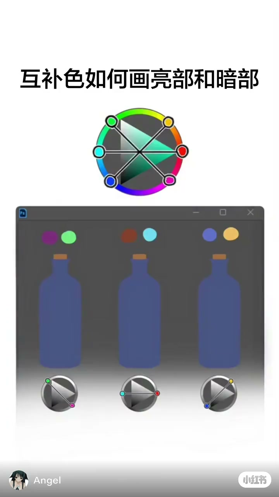
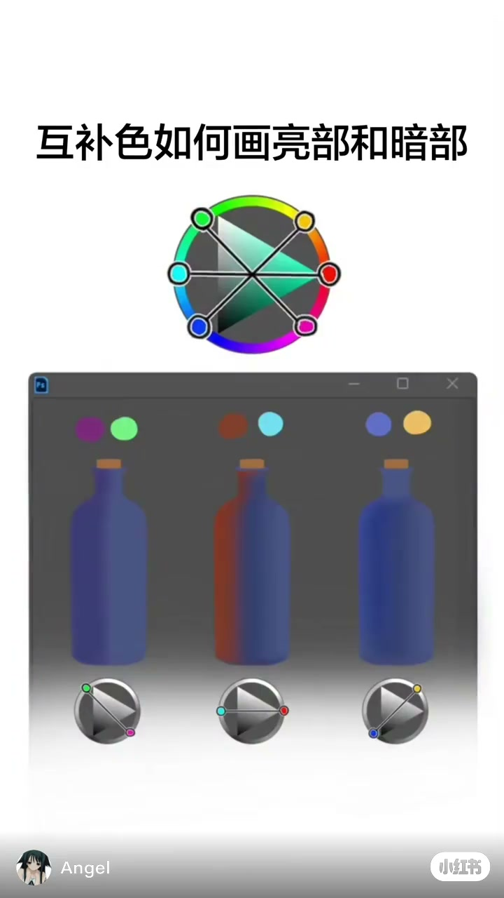
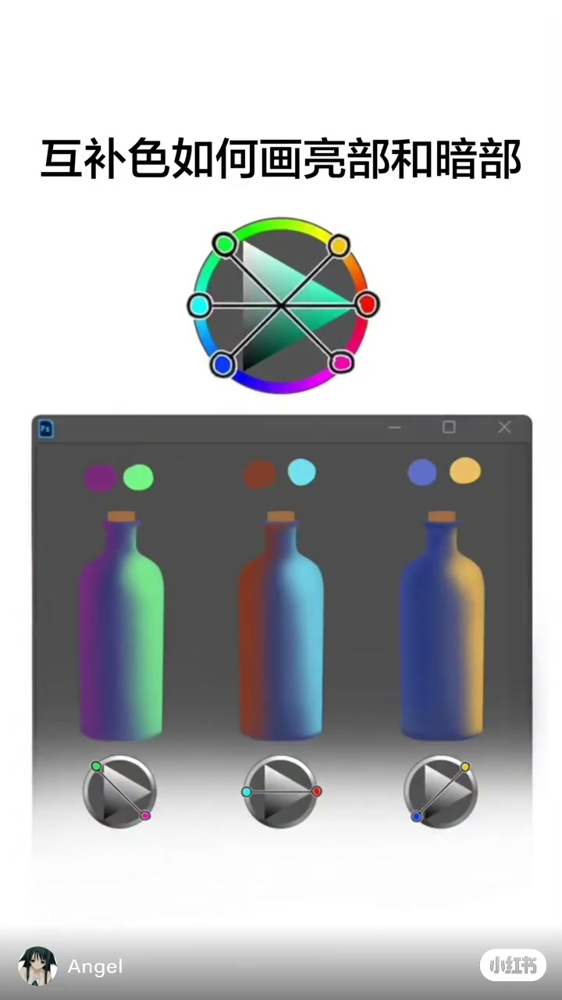

内容要点
这是一条视觉型短片。Whisper 只给出 1 段英文，和画面上的汉字对不上，下面的要点全部来自抽帧和瓶身取样，不来自口播。
画面在演示什么
标题和色轮已经在。三只瓶子瓶身接近同一块蓝灰。瓶上方的色点已经分成紫与绿、褐红与青、蓝与黄。
大约 1 秒时，左瓶左缘偏紫，中瓶左缘偏褐红，右瓶仍接近原来的蓝。到大约 3 秒，右缘分别变成亮绿、青和偏黄。
瓶子颜色基本不再变。大约 5 秒起，Angel 和小红书水印从画面底部换到顶部，标题和瓶子仍留在原位。视频没有交代数值、笔刷或光源。
这一条用三只瓶子各走一对互补色：暗的一侧离开原来的蓝灰，亮的一侧走到对面的绿、青或黄。它没有比较「只拉明度」和「连色相一起动」。
00:00–00:01
三只瓶子还是同一块蓝灰
开头白底，正中一行黑字：「互补色如何画亮部和暗部」。字下面是一枚色轮，外圈有色相，里面用三条线把对面的颜色连起来，能看出的是绿对品红、青对红、蓝对黄。色轮中央有一块朝右的三角，具体颜色数值看不清。
再往下是一块深灰窗口。窗口左上角有一枚蓝色小方标，像素里看不清字母，所以这里不写成某个软件的名字。窗口里并排三只细颈瓶子。大约 0.2 秒时，三只瓶子的瓶身取样都接近红 73、绿 85、蓝 130，左右几乎没有明暗差。
色点比瓶身上的变化来得早。左瓶上方是一紫一绿，中瓶上方是一褐红一青，右瓶上方是一蓝一黄。每只瓶子下面还有一个小色轮：左边斜线连着绿和品红，中间横线连着青和红，右边斜线连着蓝和黄。画面底部是作者名 Angel 和小红书水印。视频没有交代 Angel 为什么做这条，也没有开场口播。

00:01–00:03
左缘先离开蓝灰
口播极少，依画面。大约 1 秒，左瓶左缘略偏紫，中瓶左缘已经是褐红，取样大约 125、53、38，中瓶右缘仍是原来的蓝灰。右瓶左缘比开头更蓝一点，右缘还没有黄。标题、大色轮和三对色点都没有换位置。
看不出笔刷从哪一笔落下，只能确认变化先出现在左缘。窗口里没有时间轴，也没有取色器读数。

00:03–00:11
右缘铺上绿、青和黄，然后停住
大约 3 秒，三只瓶子都铺完。沿瓶身横线取样：左瓶左缘约 111、44、123，右缘约 119、226、146，一边紫、一边亮绿。中瓶左缘约 123、55、36，右缘约 106、196、220，一边褐红、一边青。右瓶左缘约 43、58、123，右缘约 175、144、100，一边深蓝、一边偏黄。这些数字是这一帧的像素，不是作者给出的配方。
瓶子下方的小色轮仍是刚才那三根轴。大色轮也还在。从这一帧到片尾，瓶身颜色基本不动。大约 5 秒起，Angel 和小红书水印从底部换到顶部，像是平台贴的一层标识挪了位置，画本身没有重画。
画面没有标出灯从哪边来。右缘更亮、左缘更暗，是这一条能看见的结果。它也没有说这三对颜色能不能用在别的物体上，更没有和「只把颜色拉暗」做对照。

这条片子没有说出口的边界
作者名 Angel 来自水印，也写在下载到的笔记信息里。笔记标题是「色彩理论教程」，画面大字才是「互补色如何画亮部和暗部」。二者不是同一句，正文以画面大字为准。
Whisper 的那一段英文和这些汉字对不上，转录区按原样保留，不当成讲解。蓝色小方标看不清字，软件名称标为无法确认。